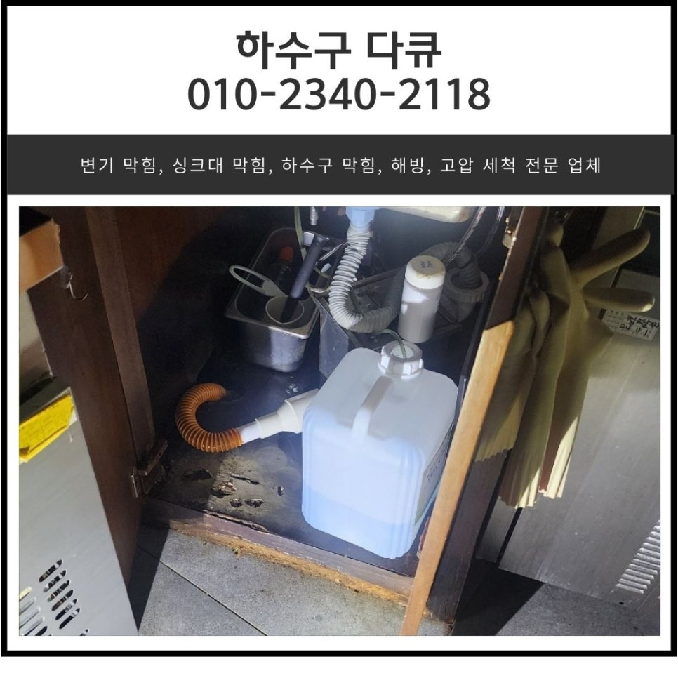
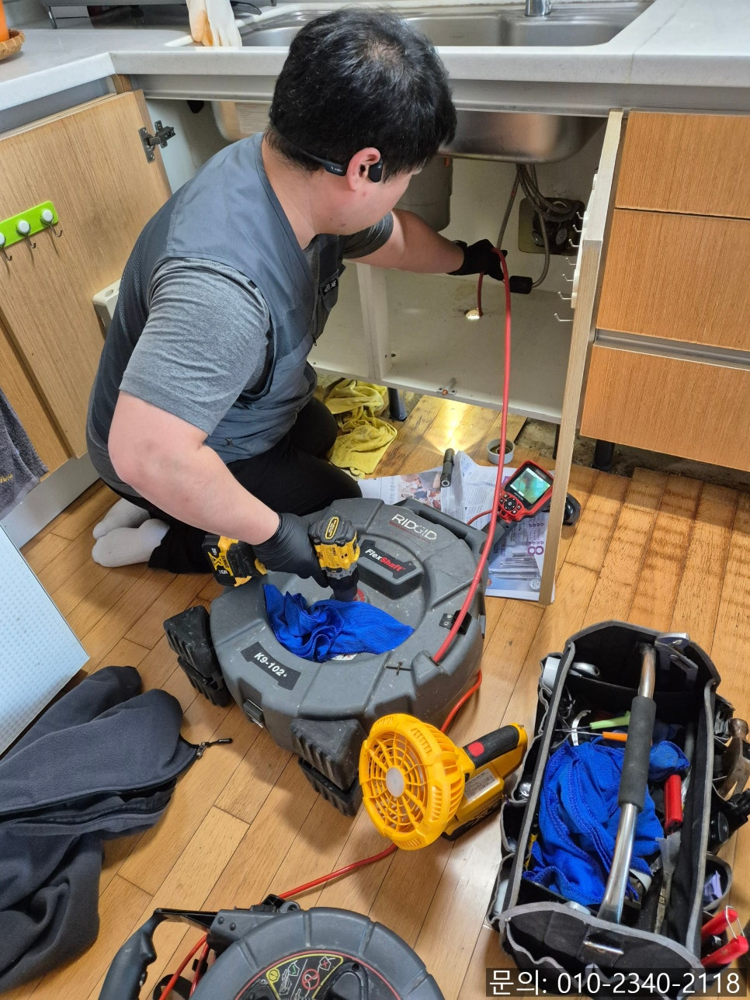
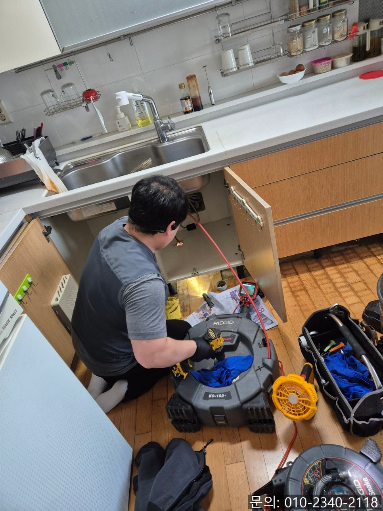
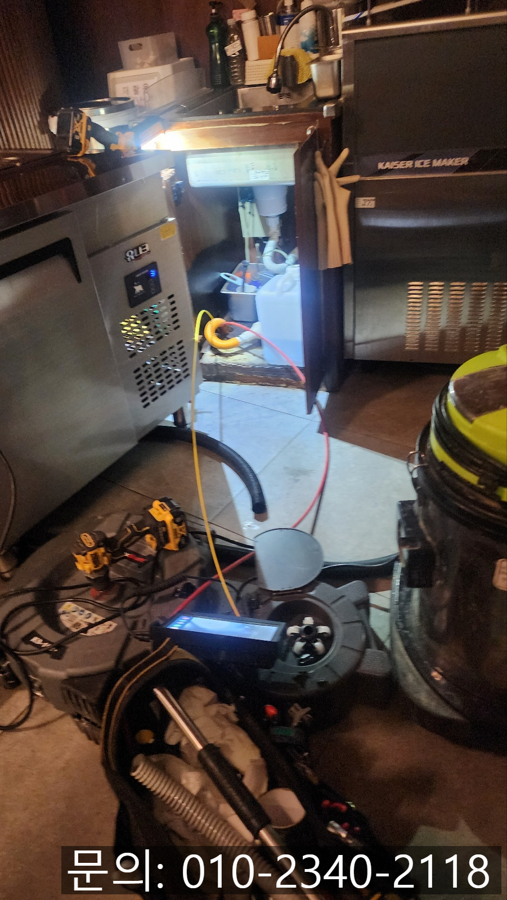
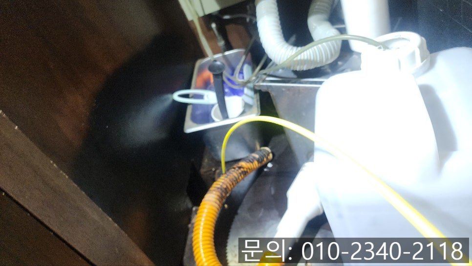
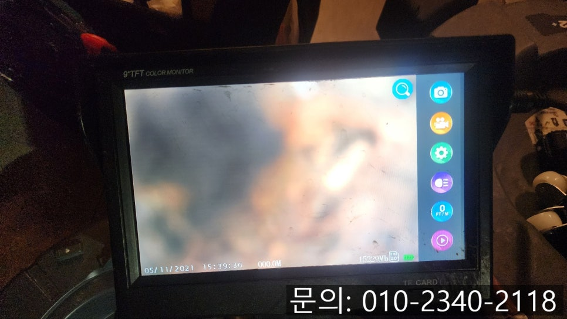
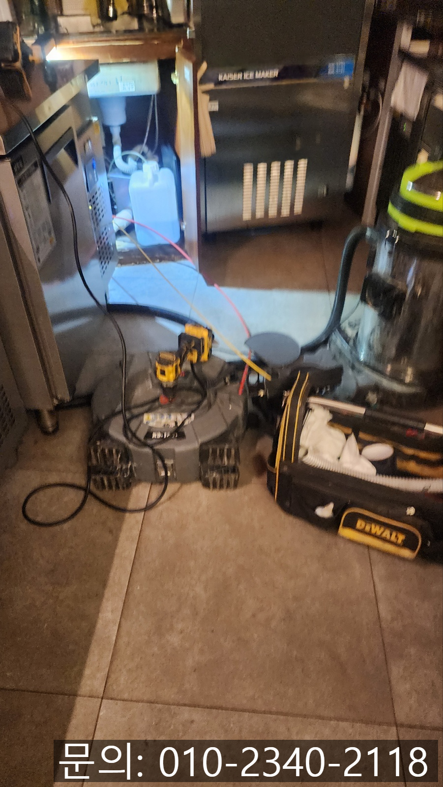

🏠 비봉면 싱크대 막힘 화성 마도면 하수구 넘침 해결 전문 설비 업체
화성 마도면 싱크대막힘 전문 시공 후기

📋 작업 개요
- 위치: 화성 마도면, 마도면, 화성
- 서비스 유형: 싱크대막힘, 변기막힘, 하수구막힘, 배관막힘, 역류해결
- 작업 일시: 2024. 12. 16. 19:29
- 업체명: 하수구수사대 (010-5615-2118)
🔍 문제 상황
안녕하세요.
비봉면 싱크대 막힘, 화성 마도면 하수구 넘침 해결 전문 설비 업체 하수구 다큐입니다.
이번에 다녀온 현장은 화성이었는데요.
화성에 있는 한 식당에서 하수구 막힘으로 역류가 발생해서 급하게 연락을 주셨습니다.
아무래도 식당 같은 매장은 주방에서 비봉면 싱크대 막힘으로 역류가 발생하게 되면 바로 장사에 지장을 주기 때문에 신속하게 방문해 해결하는 것이 가장 중요해요.
정말 다행스럽게도 화성 마도면 하수구 넘침 해결 전문 설비업체 하수구 다큐가 다른 현장 작업을 모두 마치고 장비를 정리하고 있을 때 연락을 받아 바로 출발할 수 있었습니다.
신속하게 비봉면 싱크대 막힘 현장에 도착해서 주방을 확인해 보니 싱크대에서 물이 흘러가지 못하고 고여있는 상태로 주방을 사용하지 못하고 계셨습니다.

🔎 원인 분석
💡 전문가 진단: 정밀 진단 장비를 사용하여 슬러지의 고착 여부를 판명하고 타격/세척 작업을 실시했습니다.
정말 다행이었던 게 브레이크 타임이라 손님이 계시지 않아서 장사에 피해는 없을 것 같았어요.
짧은 브레이크 타임이 끝나기 전에 비봉면 싱크대 막힘을 해결해야겠죠?
배수되지 않은 물과 이물질은 석션을 이용해 빨아드려 제거해 준 다음 싱크대와 연결되어 있는 주름 배관을 분리하고 배관 내부를 점검해 보기로 했습니다.
사람의 눈으로 직접 확인할 수 없는 배관 내부의 경우 전용 내시경 카메라를 이용해 배관의 구조와 이물질을 파악하는 게 중요합니다.
어떤 이유로 배관이 막힌 건지 확인이 돼야 그에 맞는 장비를 사용해 문제를 해결할 수 있기 때문이에요.
배관 전용 내시경 카메라가 내부로 진입하자 기름 슬러지와 검은 이물질을 확인할 수 있었습니다.
아무래도 식당의 경우 일반적인 가정집 싱크대보다 자주 사용하게 되어 기름과 음식물 찌꺼기가 배수구로 흘러갈 수밖에 없는 만큼 배관 내부에 들러붙어 딱딱하게 굳어있는 상태였어요.
특히 싱크대 배관 내부에 검은 이물질이 쌓여있다는 것은 정말 오랜 시간 이물질이 쌓이고 방치되어 썩었기 때문이에요.

🔧 작업 과정
간혹 싱크대로 흙이 흘러들어가 생기기도 합니다.
내시경 카메라를 이용해 원인을 파악한 화성 마도면 하수구 넘침 해결 전문 설비 업체 하수구 다큐는 고객님께 현재 배관의 상태를 안내해 드린 다음 작업 방식에 대해 안내해 드렸어요.
우선 배관에 오랜 시간 쌓여 굳어있는 이물질은 리지드사의 플렉스 샤프트 장비를 사용해 잘게 갈아주는 작업을 진행하기로 했습니다.
플렉스 샤프트 장비로 잘게 갈린 이물질들이 배관 깊은 곳으로 흘러들어가게 될 경우 다시 막힘이 발생할 위험이 있어 석션을 사용해 빼내기로 했어요.
위에 설명한 방법으로 작업을 진행하자 점차 깨끗해진 배관의 모습을 확인할 수 있었어요.
하지만 아직 검은 이물질이 많이 남아있어 추가로 반복해서 작업을 진행하기로 합니다.
내시경 카메라와 플렉스 샤프트, 석션을 이용해 꼼꼼하게 배관을 살펴보며 작업을 추가로 진행해 드렸고요.
거의 모든 이물질이 제거되었습니다.
처음 배관 내부를 촬영했을 때와 비교해 보면 완전히 달라진 모습을 확인하실 수 있으시죠?
이번 현장의 경우 배관이 많이 길지 않았는데도, 이물질의 양이 너무 많았습니다.
석션의 반을 채울 정도로 많은 양의 이물질을 제거할 수 있었어요.
옆에서 지켜보시던 고객님께서도 생각보다 많은 양의 이물질로 인해서 적지 않게 놀라셨습니다.


✅ 작업 완료
제거된 이물질은 변기를 이용해 흘려보내줬습니다.
마지막으로 화성 마도면 하수구 넘침 해결 전문 설비 업체 하수구 다큐는 고객님과 함께 내시경 카메라를 이용해 배관 내부에 잔여 이물질은 없는지 꼼꼼하게 확인 시켜드리고 작업을 마무리할 수 있었습니다.
고객님께서도 짧은 브레이크 시간에 깔끔하게 해결해 줘서 고맙다고 말씀해 주셔서 더 뿌듯했던 현장이었습니다.
경기도 화성시 효행로 1060 10층 1004-A246호




⚠️ 주방 싱크대 배관 막힘 예방 수칙
- ✅ 기름기가 묻은 식기나 프라이팬은 설거지 전 키친타올로 반드시 기름때를 닦아내세요.
- ✅ 주기적으로 싱크대 개수대에 뜨거운 물을 가득 받아 한 번에 내려 배관 내부 기름을 씻어내세요.
- ✅ 배수구 거름망을 미세한 필터로 사용하시고 음식물 찌꺼기가 틈으로 새어 들지 않게 관리하세요.
- ✅ 베이킹소다와 식초를 뜨거운 물과 함께 일주일에 한 번씩 부어주면 배관 살균과 막힘 예방에 좋습니다.
💡 핵심 정리
- 확실한 장비 작업(내시경 점검 및 샤프트 스케일링)으로 원인을 뿌리 뽑습니다.
- 작업 후 1년 이내에 동일한 부위 재발 시 100% 무상 A/S 서비스를 보장합니다.
- 서울 · 경기 · 인천 전 지역에 24시간 언제든 긴급 출동할 수 있도록 항시 대기 중입니다.
❓ 자주 묻는 질문 (FAQ)
🚨 화성 마도면 싱크대막힘 문제로 고민이신가요?
정확한 원인 진단과 확실한 시공으로 재발 없는 해결을 약속드립니다.
24시간 긴급 출동 | 서울 · 경기 · 인천 전지역 | 1년 내 재발 시 무상 A/S